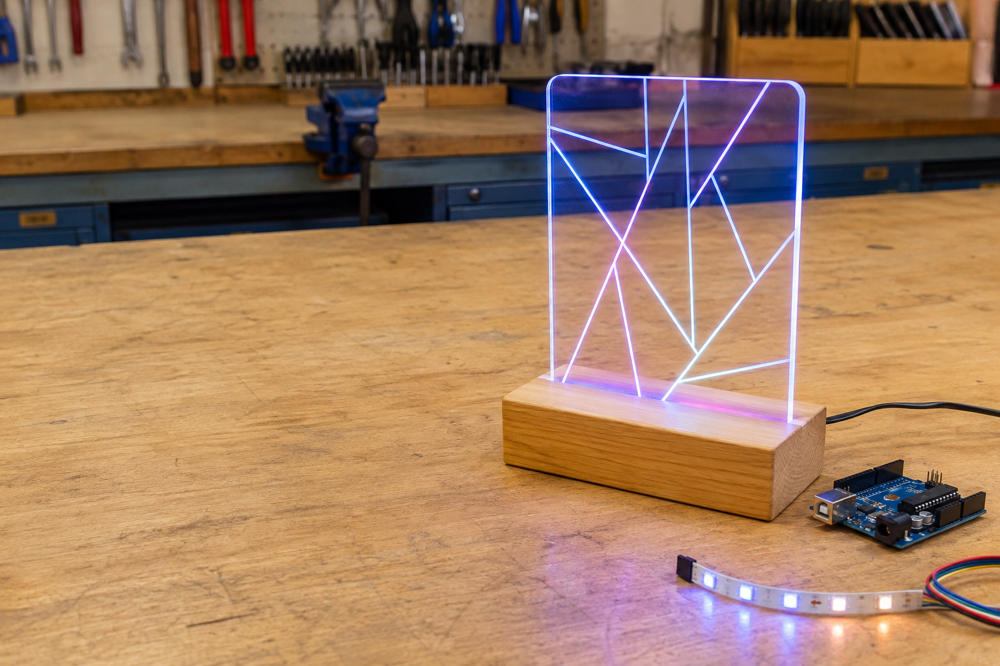

1. Read and inspect
Use the supplied sources, project plan and current Stage 4 Technology ideas to build accurate understanding.
Stage 4 Technology guided course
Investigate, design and communicate a timber-and-acrylic light that brings together materials, an Arduino Uno, an RGB LED strip and code.

The project
Investigate, design and communicate a timber-and-acrylic light that brings together materials, an Arduino Uno, an RGB LED strip and code.
How the course works
Every two-week module has three substantive theory sections, source-grounded checks and written evidence.
Use the supplied sources, project plan and current Stage 4 Technology ideas to build accurate understanding.
Use the knowledge checks and feedback to correct misconceptions.
Connect the theory to your own observations and decisions in the project.
Use Print / Save PDF and the folio backup to keep evidence outside the webpage.
Student evidence. Written evidence autosaves on this browser and device. Browser storage is a working copy, not cloud submission.
Ten-week guided pathway
The pathway uses only answerable theory and evidence from authorised sources and the current NESA syllabus. Teacher-issued instructions control the practical order and exact workshop action.
Define a programmable light, recognise project tools and materials, manage workshop risk and read the supplied drawing.
Open moduleWork accurately with units and scale, investigate suitable images and communicate a source-aware design direction.
Open moduleCompare timber sources, explain how materials and components contribute, and plan evidence without inventing a job sheet.
Open moduleUse algorithms, sequence, variables, loops and conditionals to reason about a programmable system before teacher-directed implementation.
Open moduleTest against confirmed criteria, explain decisions, evaluate sustainability and assemble an honest project evidence record.
Open module